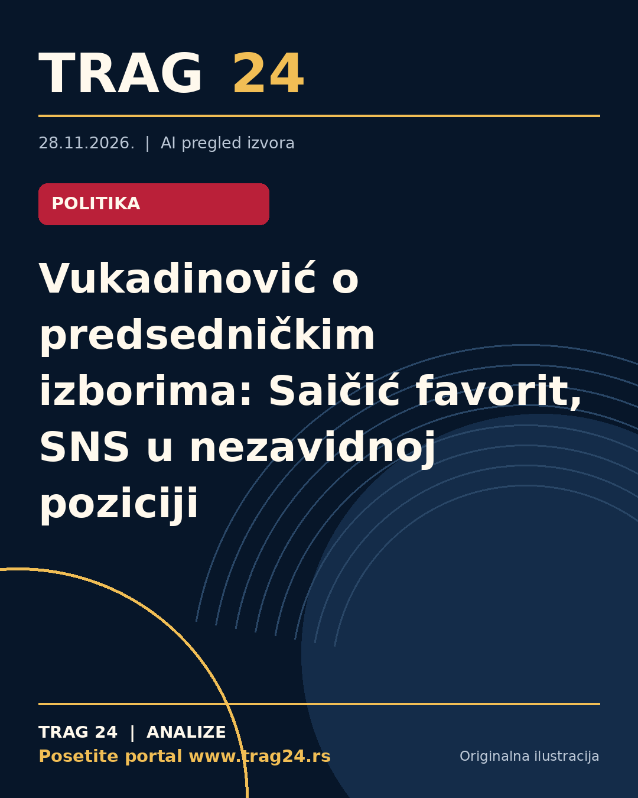

Vukadinović o predsedničkim izborima: Saičić favorit, SNS u nezavidnoj poziciji

ŠTA SE DOGODILO
Urednik Nove srpske političke misli Đorđe Vukadinović ocenio je aktuelnu političku situaciju uoči predsedničkih izbora u Srbiji. Izneo je procene o favoritima, poziciji Srpske napredne stranke (SNS) i Aleksandra Vučića, kao i o značaju izlaznosti birača.
HRONOLOGIJA
Nakon parlamentarnih izbora održanih 25. oktobra, uskoro će biti održani predsednički izbori zakazani za 27. decembar. Vukadinović je u svojim izjavama ukazao na kontinuitet procesa koji je započeo oktobarskim izborima i naglasio da će predsednički izbori predstavljati drugu fazu tog procesa.
ŠTA NAVODE IZVORI
Vukadinović smatra da je Radomir Saičić, kandidat Studentske liste, ubedljivi favorit na predstojećim predsedničkim izborima te da bi njegova pobeda u prvom krugu bila očekivana i verovatnoća za iznenađenje je mala. Takođe ukazuje na političke rizike za SNS i Aleksandra Vučića, bez obzira da li odluče da izađu na izbore ili ne. Navodi i da je Studentska lista uspela da okupi širok spektar birača, prevazilazeći tradicionalne ideološke podele, što je bilo ključno za njenu pobedu na parlamentarnim izborima.
ŠTA JE POTVRĐENO
Iz predloga Vukadinovića potvrđeno je da je SNS u složenoj poziciji u kontekstu predsedničkih izbora i da još nije doneta konačna odluka o izlasku ili bojkotu izbora. Takođe je potvrđeno da su aktuelni kandidati za predsedničke izbore Radomir Saičić (Studentska lista), kao i da samo Studentska lista, SNS i Socijalistička partija Srbije imaju kapacitet da prikupe dovoljan broj potpisa za kandidaturu.
ŠTA NIJE POTVRĐENO
Nema potvrde o konačnoj odluci SNS i Aleksandra Vučića u vezi sa učešćem na predsedničkim izborima. Takođe nije potvrđeno kako će se odvijati proces izbora u smislu izlaznosti i ocrtavanja konačnih rezultata. Nema podataka o drugim potencijalnim kandidatima osim pomenutih, niti o detaljima o strategijama i kampanjama učesnika.
ŠTA OSTАJE OTVORENO: Ostaje neizvesno da li će SNS i Aleksandar Vučić odlučiti da učestvuju na predsedničkim izborima i kako će to uticati na političku scenu. Takođe je nepoznato kakva će biti stvarna izlaznost birača i na koji način će se odraziti eventualni apstinencija ili podrška kandidatu Studentske liste. Ostaje i otvoreno pitanje na koji način će novi predsednik koristiti ovlašćenja funkcije s obzirom na njihova ograničenja, kao i kako će se razvijati odnos nove vlasti sa međunarodnim partnerima.
Izvori
- https://www.nedeljnik.rs/vukadinovic-o-predsednickim-izborima-saicic-ubedljivi-favorit-sns-u-nezavidnoj-poziciji/
- https://mondo.rs/Info/Politika/a2317969/vukadinovic-sns-rizikuje-i-ako-izadje-na-izbore-i-ako-od-njih-odustane.html
Ova analiza je pripremljena uz pomoć veštačke inteligencije na osnovu javno dostupnih izvora. Navodi izvora nisu nužno nezavisno potvrđeni.